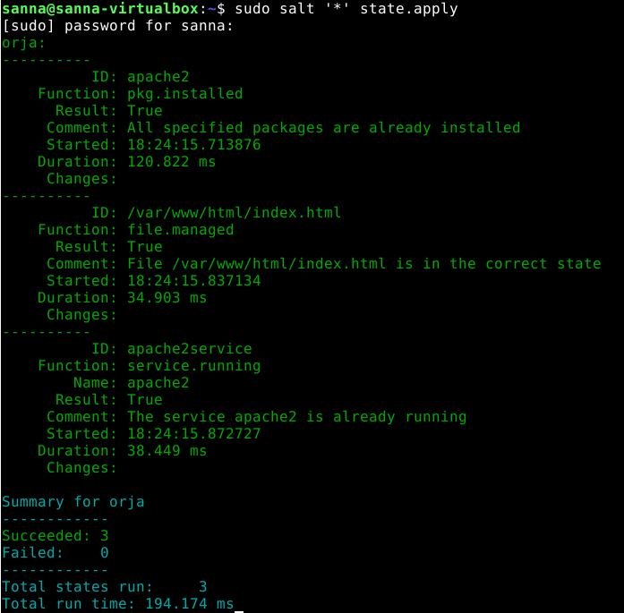
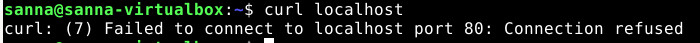
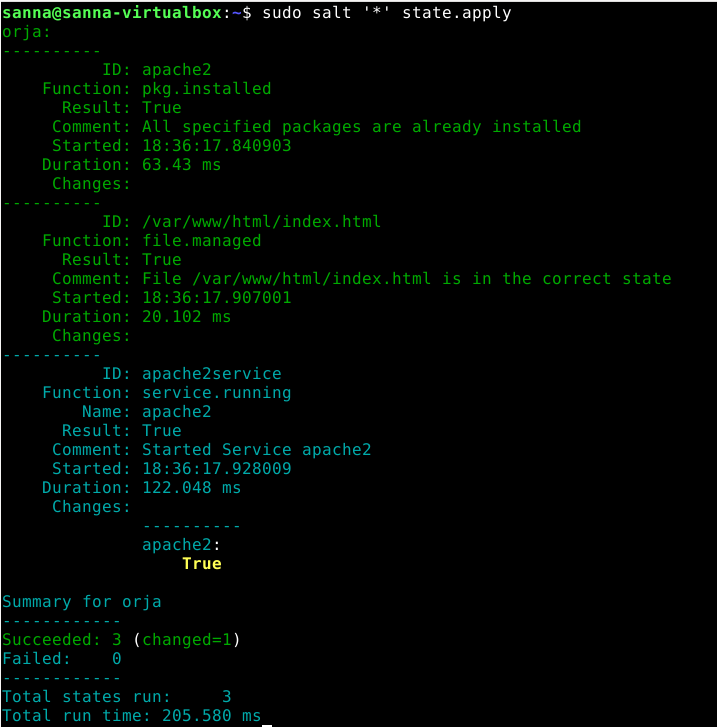
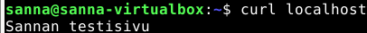
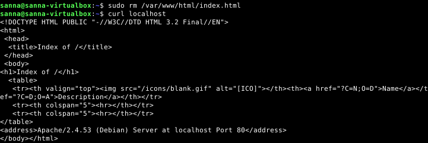
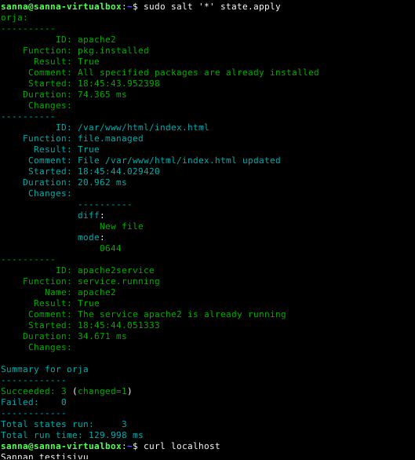
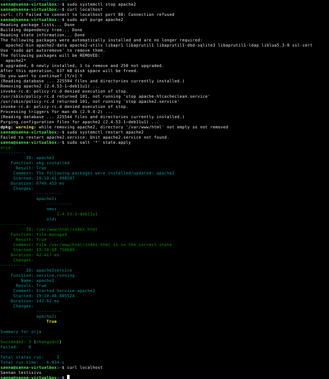

Tehtävä b, Tri Kaaaos
Ajetaan ensin salt tilat uudestaan ja nähdään, että mitään ei tapahdu, koska mitään
muutoksia ei ole tehty

Sammutetaan apache ajamalla 'sudo systemctl stop apache2', jonka jälkeen curl localhostiin ei vastaa.

Ajetaan apache-tila uudestaan, ja nähdään, että salt on käynnistänyt apachen uudelleen (service.running).

Tarkistetaan curlilla, että nyt taas localhost vastaa.

Deletoidaan apachen testisivu. Curlilla havaitaan, että apache sinällään on
pystyssä, mutta koska testisivua index.html ei löydy, se palauttaa hakemistorakennesivun vastauksena.

Ajamalla tilat uudelleen, sivu kopioituu saltin konfiguroinneista uudelleen, ja localhost taas toimii kuten pitääkin.

Stopataan apache, poistetaan apache2 pakettien asennus, yritetään startata apache, ei tietenkään onnistu kun paketit puuttuu.
Ajetaan saltilla tilat uudelleen, ja sekä apache2 pakettien asennus, että apache2 starttaus tapahtuu uudelleen ja localhost taas toimii.
